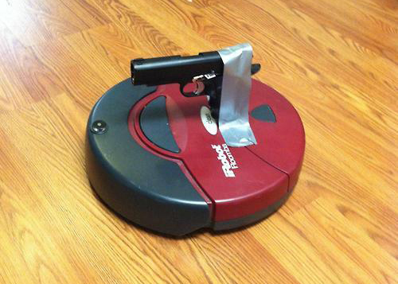
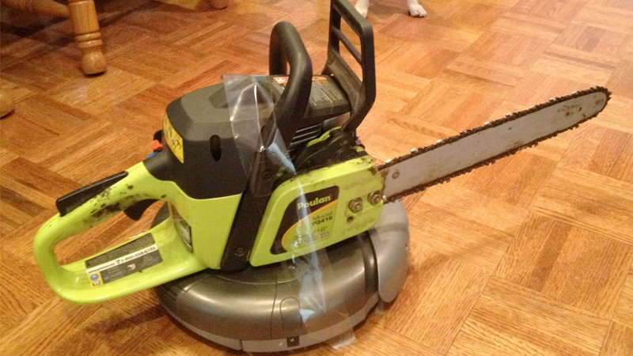

Elon Musk showed off a new humanoid robot Friday, 9/30, at a Tesla Inc. artificial-intelligence event, part of the chief executive’s effort to shape public perception of the company as more than an electric-vehicle maker. The Tesla boss painted a vision of Optimus as helping Tesla make cars more efficiently, starting with simple tasks and then expanded uses. He has also suggested the robot could serve broader functions and potentially alleviate labor shortages.
Top scientists and business people have warned of mass unemployment due to the rise of Smart Technology, Artificial Intelligence, Robotics, and Algorithms (STARA)
It is estimated that one-third of jobs that exist today could be taken by STARA by 2025
This is due to significant improvements in robotic dexterity and intelligence, coupled with inexpensive autonomous units that have the potential to outperform humans at many manual and conceptual tasks
Examples of these types of technology can be seen with the popularization of retail self-checkouts, smartphone applications, automation in accounting, the internet of things, and future developments in driverless vehicles
In the long run, less well-educated workers could be particularly exposed to automation, emphasizing the importance of increased investment in lifelong learning and retraining
• How have robotics disrupted the manufacturing industries?
• How have robotics and automation decreased human participation in the labor market, if at all?
• How do you see robotics being implemented in the future? Is it going to be implemented predominately in humanoid form?
• What are the ethical concerns surrounding expanded integration of artificial intelligence in robotics?